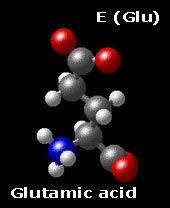
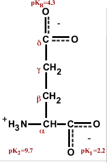
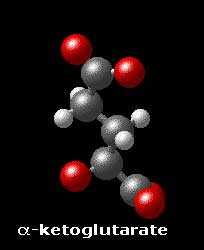
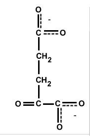
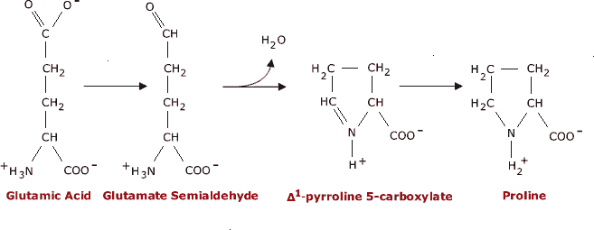

The Biology Project > Biochemistry > The Chemistry of Amino Acids
Glutamic Acid E (Glu)
Chemical Properties: Acidic
Physical Properties: Polar (charged)
Interconvertible with α-ketoglutarate
Biosynthesis of ProlineGlutamic acid has one additional methylene group in its side chain than does aspartic acid. The side chain carboxyl of aspartic acid is referred to as the β carboxyl group, while that of glutamic acid is referred to as the γ carboxyl group.
The pKa of the γ carboxyl group for glutamic acid in a polypeptide is about 4.3, significantly higher than that of aspartic acid. This is due to the inductive effect of the additional methylene group. In some proteins, due to a vitamin K dependent carboxylase, some glutamic acids will be dicarboxylic acids, referred to as γ carboxyglutamic acid, that form tight binding sites for calcium ion.


Top
Glutamic acid is interconvertible by transamination withα-ketoglutarateGlutamic acid and α-ketoglutarate, an intermediate in the Krebs cycle, are interconvertible by transamination. Glutamic acid can therefore enter the Krebs cycle for energy metabolism, and be converted by the enzyme glutamine synthetase into glutamine, which is one of the key players in nitrogen metabolism.
 Note also that glutamic acid is easily converted into proline. First, the γ carboxyl group is reduced to the aldehyde, yielding glutamate semialdehyde. The aldehyde then reacts with the α-amino group, eliminating water as it forms the Schiff base. In a second reduction step, the Schiff base is reduced, yielding proline. 
Top
The Biology Project > Biochemistry > The Chemistry of Amino Acids
http://biology.arizona.edu
All contents copyright © 2003. All rights reserved.